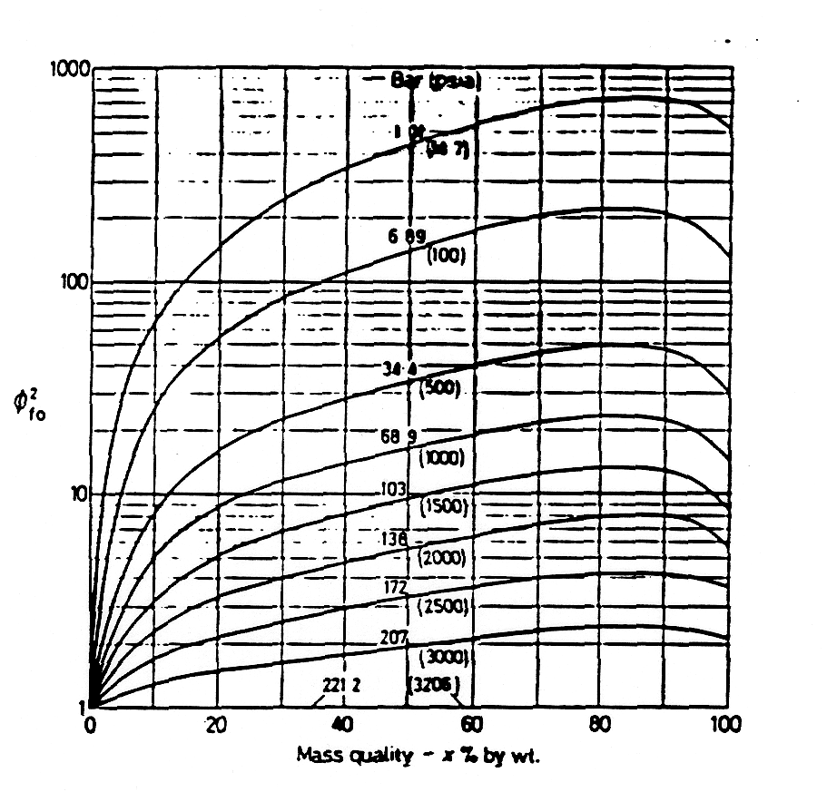

Figure 3.2. Value of
fo
2
as a function of Pressure and Mass Quality (Martinelli-Nelson)
 fo2 as a function of Pressure and Mass Quality (Martinelli-Nelson)
fo2 as a function of Pressure and Mass Quality (Martinelli-Nelson)
fo2 as a function of Pressure and Mass Quality (Martinelli-Nelson)
fo2 as a function of Pressure and Mass Quality (Martinelli-Nelson)